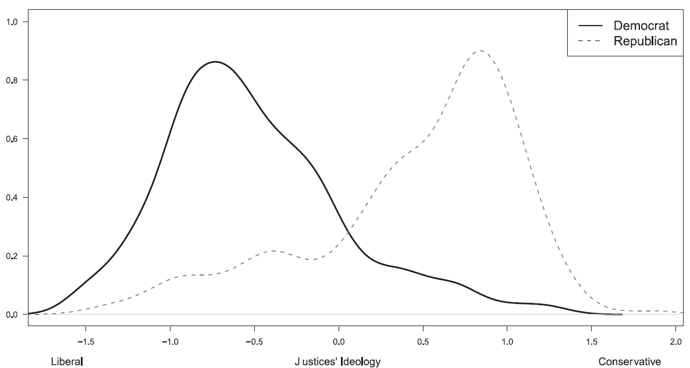
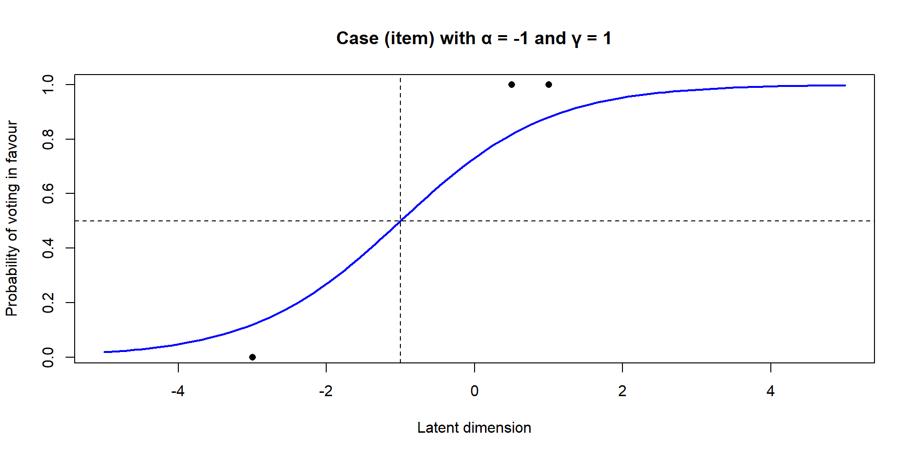
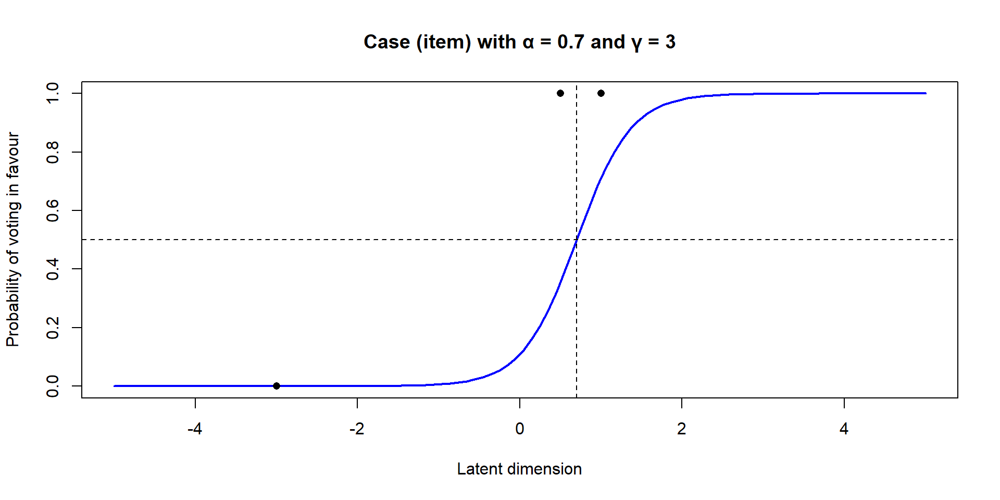
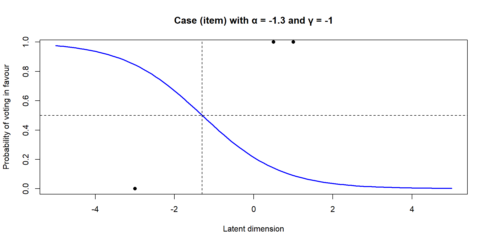

Judicial Preferences and Decisions
Week 3
How do judges make decisions?
last week we spoke about the main theoretical approaches to understanding judicial behaviour
this week we continue with this theme by looking at judicial preferences in more detail
Variation in judicial preferences
some judges are more …
- ideological, partisan, competent, power-hungry, lazy, independent, ambitious, etc.
… than others
- the sources of judicial preferences are manifold: background characteristics, experience, legal and political context
Variation in judicial preferences
Ideology of Democratic and Republican State Supreme Court Justices (Gibson and Nelson 2022)
Variation in judicial preferences
if judges were randomly sampled from a country’s population, their preferences would be on average (in expectation) similar to the population’s
- there would also be a lot of heterogeneity (as much as in the population)
in reality, judicial preferences are systematically influenced by a set of institutional factors
Systematic variation in judicial preferences
what needed to happen for someone to become a judge on court X? (selection effects)
what kind of person wants to become a legal professional? (internal)
what kind of person is likely to be appointed a judge? (external)
answers to these questions will be shaped by institutional features
Gender variation on the bench
judges’ gender systematically influences judicial preferences, at least for some types of cases
the proportion of female judges varies greatly between countries
around 30% in common law countries
over 70% in some post-socialist countries
Women in the Czech judiciary
Havelková, Kosař, and Urbániková (2022) illustrate the impact of institutional factors on gender representation in the Czech judiciary
low importance and prestige under socialism resulted in many female judges (60+%)
low salary (relative to lawyers) perpetuate the inequality post-socialism
standard working hours (relative to lawyers) attract more women due to childcare
despite higher overall numbers, the most important positions are occupied by men
- the childcare penalty hampers career progression but female judges largely accept their situation as given (Urbániková, Havelková, and Kosař 2024)
Realizing judicial preferences
judicial preferences manifest most importantly in decisions
judges’ ability to realize their preferences is to varying degrees constrained by: the facts of the case, the law, preferences of other deciding judges (panel decisions), preferences of other actors (e.g. the legislature)
Realizing judicial preferences
a common objection to non-legal analyses of judicial behaviour is that disagreement between judges (or courts) is misrepresented as ideological
if this objection holds, disagreements about the law should not correlate with disagreements about policy
- but e.g. almost all proponents of originalist interpretation of the US constitution also prefer conservative policies
Empirical evidence
US Courts of Appeals judges apply different standards in comparable capital punishment cases depending on whether they were appointed by D or R president (Beim, Clark, and Lauderdale 2021)
a law and economics training programme for US judges made them decide more conservatively (Ash, Chen, and Naidu, n.d.)
Fox News viewership causes elected judges to impose harsher sentences (Ash and Poyker 2024)
Empirical evidence
judges socialized in Nazi Germany were more lenient towards Nazi criminals than other judges (Kern and Vanberg 2024)
high salience and politicization of immigration is related to lower asylum appeal success (Spirig 2023)
judges with daughters are more feminist than judges who only have sons (Glynn and Sen 2015)
Learning about judicial preferences
Learning about judicial preferences
one of the most challenging tasks in the study of judicial behaviour is measuring judicial preferences
judges operate much more secretively than politicians and are therefore more difficult to approach (for interviews, surveys, experiments)
even if we could ask judges about their preferences, it is unlikely they would answer sincerely (social desirability bias)
Learning about judicial preferences
the most common way of learning about judicial preferences is by looking at what judges decide
pros: real behaviour (vs experimental hypotheticals); revealed (vs stated) preferences
cons: “post-treatment”; motivated reasoning; requires individual positions (on panels); comparability requires random case assignment
The case space model

- imagine a one-dimensional space mapping countries by how dangerous they are to live in
The case space model

- imagine each case concerns an asylum application from a different country of origin
The case space model

The case space model

- the judge prefers to grant all applications to the left of their ideal point
The case space model

- the judge prefers to deny all applications to the right of their ideal point
The case space model

The case space model

The case space model

The case space model

which judge is the most conservative?
which judge is the median judge?
Ideal point estimation
aggregating judicial preferences from decisions is not as straightforward as taking the average of yes/no votes
a vote in favour of the plaintiff might be associated with both ends of the policy spectrum
not all cases are equally “difficult” to decide for a judge
Ideal point estimation
scholars have therefore adapted item-response theory models from psychometrics to solve these issues (Bafumi et al. 2005)
there are generally three parameters in these models:
the judge’s ideal point (\(\theta_j\)) or “ability”
the case’s location or “difficulty” (\(\alpha_i\))
the case’s discrimination sensitivity (\(\gamma_i\))
Ideal point estimation
- a judge’s response \(y_{ij}\) (vote/decision) in a case is modelled as the distance between their ideal point and the case’s location on a continuum (e.g. left-right)
\[ Pr(y_{ij}) = \frac{exp(-\alpha_i + \gamma_i \theta_j)}{1 - exp(-\alpha_i + \gamma_i \theta_j)} \]
the discrimination parameter \(\gamma_i\) reflects how strongly the case’s response probabilities are influenced by small changes in the distance between the judge’s ideal point and the case’s location
high \(\gamma_i\) : the case is more sensitive to the distance and provides sharp differentiation (e.g. a polarizing case)
low \(\gamma_i\) : the case is less sensitive and provides more gradual differentiation (e.g. a case unrelated to the latent dimension)
Ideal point estimation
Ideal point estimation
Ideal point estimation
Ideal point estimation

Ideal points of judges on the International Court of Justice (Dyevre 2025)
Ideal point estimation
the recovered dimension could in principle be anything
researchers need to validate it against additional information about cases and judges to establish what it captures (e.g. left-right)
Panel aggregation paradox

Landa and Lax (2009) highlight how aggregation of decisions on panels by majority might deviate from individual decisions on case components
if both considerations are absent, the decision should be upheld; judges decide by majority
there is evidence that judges who sit together on panels are capable of influencing each other (Grossman et al. 2016; Kastellec 2013)
References

POLS0113: Judicial Politics